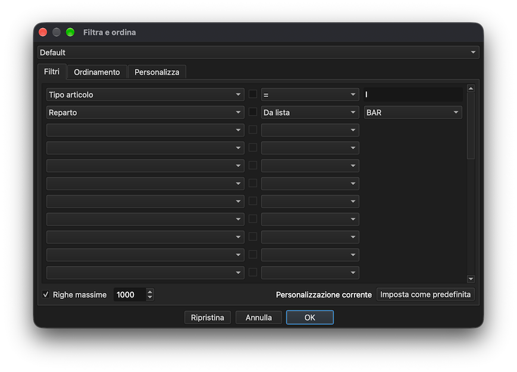

Tramite questa finestra è possibile filtrare e ordinare i dati da presentare nelle schede.

La finestra presenta sempre tre linguette:
La linguetta Personalizza è visibile e disponibile solo per gli utenti che possono modificare filtri e ordinamento.